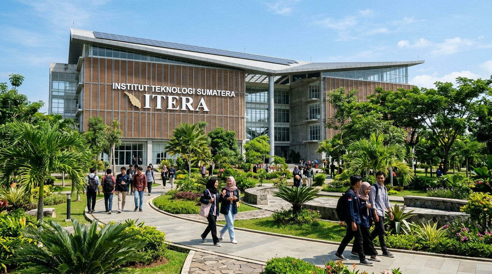

Mahasiswa ITERA Rancang Sistem Irigasi Cerdas Bertenaga Surya untuk Pertanian Lampung
Dipublikasikan pada: | Penulis: Tim Redaksi Humas ITERA | Kategori: Inovasi Teknologi Mahasiswa

Lampung Selatan — Mahasiswa Institut Teknologi Sumatera (ITERA) kembali menorehkan terobosan solutif bagi masyarakat daerah. Melalui kolaborasi riset lintas disiplin antara Program Studi Teknik Elektro dan Program Studi Teknik Biosistem, tim peneliti muda ITERA berhasil menciptakan sebuah sistem irigasi persawahan cerdas bertenaga panel surya terintegrasi teknologi Internet of Things (IoT).
Latar Belakang dan Urgensi Inovasi Lapangan
Wilayah Lampung Selatan memiliki potensi sektor agraria yang sangat melimpah, namun kerap terkendala pasokan air pada musim kemarau panjang. Selama ini, para petani lokal sangat bergantung pada pompa bahan bakar minyak (BBM) yang berbiaya operasional tinggi dan memicu emisi polusi udara. Berangkat dari kondisi nyata tersebut, para mahasiswa ITERA tergerak untuk merekayasa alat penyiraman presisi yang ramah lingkungan, hemat daya, serta dapat beroperasi mandiri di lahan perkebunan tanpa jaringan listrik PLN.
Implementasi Panel Surya Fotovoltaik dan Sensor IoT
Sistem irigasi ini ditenagai oleh rangkaian panel surya fotovoltaik monokristalin berkapasitas 400 Watt-peak (Wp) yang dipadukan dengan modul pengisi daya cerdas dan baterai litium berdaya tahan tinggi. Untuk mendeteksi kebutuhan air tanaman secara berkala, tim memasang serangkaian sensor kelembapan tanah (soil moisture sensor) dan sensor suhu udara di titik-titik krusial lahan.
Ketika sensor mendeteksi tingkat kelembapan tanah berada di bawah ambang batas minimal, mikrokontroler akan secara otomatis mengaktifkan katup selenoid dan pompa air DC untuk mengalirkan air dengan debit yang terukur. Setelah kelembapan optimal tercapai, sistem seketika menghentikan pompa guna menghemat air tanah dan cadangan baterai.
“Kami merancang sistem ini agar mudah dioperasikan oleh petani pedesaan. Seluruh data kelembapan dan status pompa dapat dipantau langsung melalui layar monitor sederhana maupun notifikasi peramban ponsel pintar,” jelas salah satu perwakilan tim mahasiswa inovator ITERA.
Apresiasi Pimpinan ITERA dan Rencana Hilirisasi
Rektor Institut Teknologi Sumatera menyampaikan apresiasi setinggi-tingginya atas dedikasi dan kepekaan sosial para mahasiswa. Beliau menegaskan bahwa keberadaan ITERA di Pulau Sumatera harus menjadi pusat lahirnya teknologi tepat guna yang menjawab kebutuhan mendesak masyarakat sekitar.
Sebagai tindak lanjut, prototipe sistem irigasi bertenaga surya ini akan didaftarkan ke Pusat Kekayaan Intelektual ITERA serta diikutsertakan dalam program inkubasi bisnis kampus. Melalui skema pengabdian masyarakat terpadu, ITERA berencana memasang percontohan sistem irigasi surya ini di beberapa desa binaan di Lampung Selatan pada musim tanam mendatang.